Worklist: the user's five verbatim complaints + red-team sweep 20260806-1
(docs/qa/redteam/run-20260806-1-findings.md, fc10395). Every claim taken was
MEASURED on an instrument before anything was built — the pixel ray-census replays the
solved camera of the exact plate the judge saw and names the mesh under each complained
pixel. Before-images are the closing-bake plates (baked 2026-08-06 ~12:00); after-images
are the live plates (/assets/scenes/del-cine/). Serve repo /public
and /docs on one port to view.
scratchpad/pixel_probe.py,
calibrated on the walk-lantern pixel to the exact mesh): the whole tan "marble floor" across
waterfront's right half IS water_pool-mid (z 0.20 under every probed pixel); the
north-landing "orange rectangle" IS water_pool-downstream; the "hollow gap" was
opaque unlit water in the bank's shadow. Root cause: water_pool-mid and
-downstream were bare 16/8-vertex boxes with no Col colour
attribute — locksfoot_build.py:850 notched the mid pool through
join_meshes after tranche 2 shipped and silently dropped the ratified
depth→alpha bake (water_pool-upstream kept its layer, alpha 0.02–0.97;
t2_water_shader.py:178 records mid at 26,512 baked verts). Fix class: re-run of the SHIPPED recipe, not a new look — t2_water_bed's
four shelves verified present, then t2_water_shader.py -- save: mid 8,648 verts
alpha 0.06–0.97 · downstream 4,290 · lf_lock_water 90; verified in the re-opened
artifact. The restoration is what the user ratified in
docs/plans/water-transparency.md (AS BUILT).


doorway()'s dark
mat_timber_dark slab on a dark wall. Ray-census from each door's OWNING solved
camera: 4/5 door slabs are directly visible — the OCCLUDED verdicts were
shadow-perceptual, so legibility (not camera work) is the right fix class. The cookhouse door
faces south while quay-west shoots from the north — geometrically invisible in that one plate
(its own roof blocks the ray by ~3 m): a camera-ownership note for the seam lane, not a
dressing defect; the south door is the real, walkable entrance.Fix class: tools/door_legibility.py — additive carrier, 62 objects in
DOOR_LEGIBILITY: painted panel in each shop's accent paint, light freshwood
IN-FRAME pilasters (proud side-jambs would clip the built window frames — the armor shop's
window frame overlaps its own door slab), stone threshold at the measured street level, and a
warm glow from the town's own lit-window materials (mat_*_window_a): a transom
where measured headroom allows (cookhouse, 0.69 m), lit panes in the door's upper half under
the pentices elsewhere (0.03–0.48 m headroom). Street levels re-measured in-session and
asserted (drift gate ±0.08). walk_engine_gate GREEN after (0 lost cells of 4,097).


lf_dam_boil — twenty axis-aligned
box prisms in flat dark grey. Fix: tools/boil_dress.py — seeded vertex
jitter (±0.22 m plan, ±0.10 m z) + mat_boil_foam at the water shader's own
foam-lobe tone; the finding-86 surface-straddle contract re-asserted after the edit
(z −4.21..−3.58 over −3.80). With the restored water alpha, the shader's AO foam band now
rings the lumps and the whole group reads as churn (see the north-landing pair above).Worklist: the two Dellhollow residuals named in the 07:55 round-2 close-out
(docs/qa/DAYLOG.md) — the deep-stairs water "flat untextured cyan plane" and the
quay-west "deck sliver". Red-team fix loop: MEASURE the claim on an instrument first. Both
claims turned out to name the wrong object, and the measurements are why. Before-images are
the round-2 plates (before3/); after-images are live.
water_pool-mid. (b) Master census: that sheet HAS the restored bake —
Col present, t2ws set, 8,648 verts, manifest median 4.10 m / ramp
×0.976. All four m_water sheets carry it; none was missed.
(c) Down-ray census of the bed under the camera's whole visible water band (x 38..58,
y 21..31; walk meshes and water hidden): z = −3.90 in 108 of 121 cells — the untouched
riverbed slab, a CONSTANT 4.10 m of depth. (d) The alpha those cells carry,
sampled through the camera: p10 0.641 · p50 0.970 · p90 0.970, 68.1% of the frame's water
pixels at or above 0.95. One flat depth gives one flat alpha. The bake is there; it has
nothing to encode.Fix class: BATHYMETRY, which is what docs/plans/water-transparency.md
calls the deliverable ("the shader is the cheap part"). W2 built three shelves — lockfive,
boatyard, cottage-steps — nominated by t2_probe_shore against the cameras that
existed then; this reach was not one of them. New carrier tools/ds_shelf.py
lays t2w_bed_deep-stairs (496 verts / 450 quads, mat_rock, the
material the bank already wears) over x 36..60 × y 20..32: two incommensurate wave lengths
plus seeded jitter, tapered to the slab at its own border so the weld has no seam, clamped
so it can never come within 0.75 m of the surface (it cannot breach, and cannot foul
wf_skiff_walk at z 0.37) and never sinks below terrain already there
(bed + 0.06, no z-fighting with the bank toe at y 25). Bed depth after:
0.75 / 2.72 / 3.16 / 3.72 / 4.04 m (min/p25/med/p75/max) where it was one number.
Then the SHIPPED recipe re-run — t2_water_shader.py -- save.
| camera | p50 before → after | p90 before → after | % of water pixels ≥ 0.95 |
|---|---|---|---|
| deep-stairs | 0.970 → 0.758 | 0.970 → 0.884 | 68.1% → 0.0% |
| waterfront | 0.970 → 0.970 | 0.970 → 0.970 | 85.2% → 55.8% |
| fishdock | 0.970 → 0.970 | 0.970 → 0.970 | 95.7% → 75.5% |
water_pool-mid's
manifest entry is byte-identical (median 4.10, ramp ×0.976, 8,648 verts, samples 8,196,
alpha 0.065..0.97) — the per-sheet ramp did NOT rescale, which is what proves no other
camera's water moved by side effect. The only other delta town-wide is
water_pool-downstream: 12 of 4,290 vertices, depth_min
0.04→0.02, alpha_min 0.078→0.070 — the bed those 12 rays land on is
lf_dam_boil, which boil_dress jittered AFTER round 1's water
re-bake. Named, not hidden; ≤0.008 of alpha on 0.3% of one sheet.qm_awning_3 / qm_awning_4, material mat_qm_awning.
The round-2 paving ribbon (walk_e_market-stalls__lockhead_l0, the one renderable
walk record in the master) is NOT visible from that camera at all — 0 hits in a 336×192
census. Two structural defects behind the read, both in qm_build.py:
stall() takes the lip from awning_lip()
(walk ground + AWN_CLEAR 2.24 m) and then the ridge as
max(zc + 2.30, lip + 0.26). Wherever headroom drives the lip the second term
wins, so the canvas ships with 0.26 m of fall over 0.98 m of depth — a 15° sheet.
quay-west looks down at ~19°, i.e. within ~4° of the canvas, so it collapses to a ~25 px
strip; being the only sunlit surface in a shadowed pocket, that strip blows out to
near-white. A stripe of canvas seen end-on with nothing lit under it is a floating sliver.qm_awning_0/1/3/4 had 0 of 12 faces pointing up;
only qm_awning_2 (built with the opposite sign on y) and every
shelf_awning_* were correct. awning() appends its quads with one
fixed winding, so the normals follow the sign of (y_out − y_wall). Cycles shades two-sided,
which is why every plate hid it — the realtime tier's backface culling would not have.Fix class: geometry, via a carrier — qm_build.py derives its walls and
stall sites FROM walk records and must not be re-run against the live master.
tools/qm_awning_fix.py raises the RIDGE only, per awning, until the pitch
reaches 0.52 m or the ray-cast finds something 0.12 m above it, and flips the winding.
The lip does not move — it is the headroom contract, and the gate asserts it to 1e-6.
Result: fall 0.26 → 0.52 m (15° → 28.0°) on awnings 0/1/3/4, and 0.26 → 0.30 m (17.1°) on
awning 2, which is capped by qm_notice_board measured above it; 12/12 up-faces
on all five. Headroom under awning 3's lip stays the measured 2.29 m over
qm_paving, against the district's 2.24 m rule and the master's 2.05 m corridor.
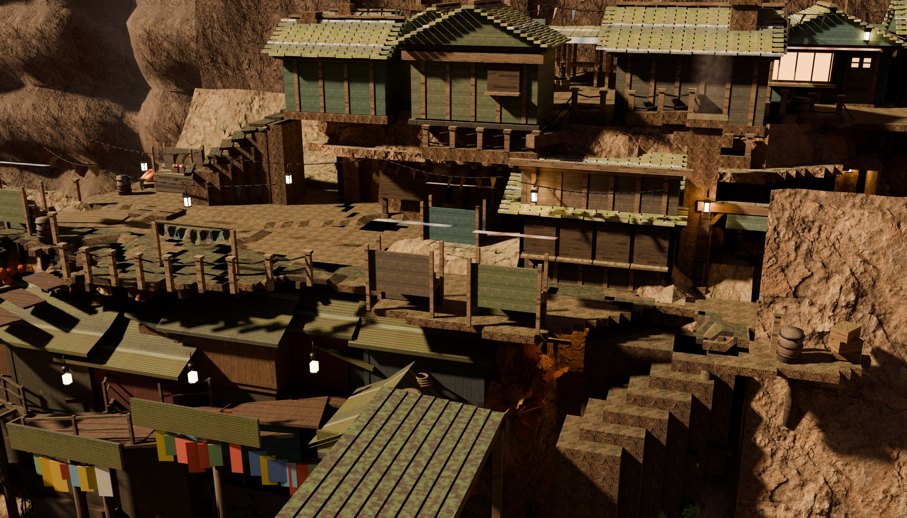
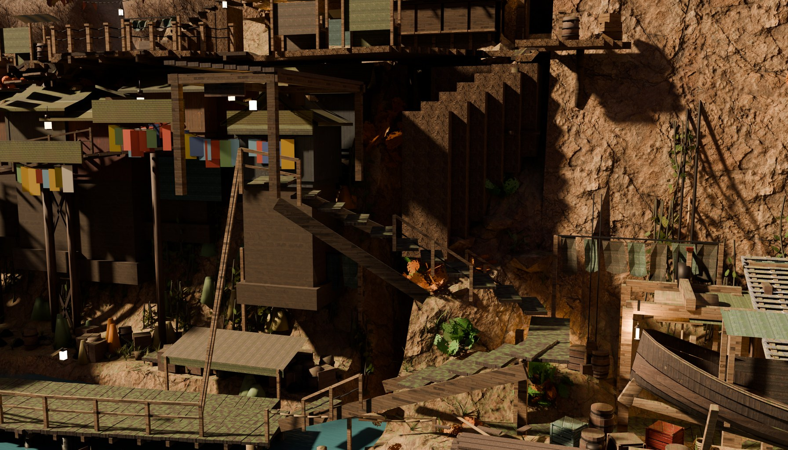

fishdock (same material, same shader, judged CONVINCING) is broken by piles, a
skiff and a boat. tools/ds_rocks.py SEARCHES for boulder sites rather than
authoring them — 608 candidates on a 0.5 m grid, each asked in order: is there
≥1.20 m of water under it · is anything that is not terrain within CLEAR · is it inside
the frame · does the camera's ray reach it through the surface. Zero survivors, at
CLEAR = 0.85, 0.60 and 0.40 m (killed: 52 too shallow · 416/389/356 within a prop ·
107/126/145 outside the frame · 33/41/55 behind something). The wharf fills the reach; the
water the camera can see is all under it. The script refuses to place one by hand —
its own assertion says so in as many words — so nothing was built and the master carries no
boulders.tools/blind_pack.mjs over before3/quay-west.jpg and the live plate — the pack itself is not committed because it is two copies of files already in git, and one command rebuilds it), no history, no ownership
framing, zero external spend. Scores: after 7/10, before 5/10. Verbatim on the
BEFORE: "a bright white/pink diagonal streak crossing the plaza floor ... no clear source or
geometric logic — reads as a rendering artifact/glare streak, not a scene element" and
"floating line with no attachment to any geometry". Verbatim on the choice: "img-b carries an
extra bright diagonal streak across the plaza that img-a does not have. That streak is the
kind of thing that instantly reads as broken/unfinished to a player."qm_stall_3's painted board
(mat_qm_paint_blue), measured by the same ray-census. Filed for round 4, not
touched here.tools/scene_redteam.mjs --mode checklist --shots
deep-stairs,quay-west, judge pinned gemini-3.6-flash, 4 calls, 0 errors —
docs/qa/redteam/run-20260807-round3/.Worklist: boil close-read · waterline foam/shore band · boatyard black slabs ·
railings/market-stand close-read · crushed-black street shadows · plus two the evening's judge
named (deep-stairs "no normal ripples, refraction in the shallows", and the "teal-blue flat
panel ... looks like a placeholder plane"). The worklist filed the whole set under the town's
LIGHTING doctrine — adjusting an existing light has never moved this town; ADDING a source
always has. The measurement splits the set in two, and one half is not a lighting
problem at all. Before-images are the round-3 plates (before4/); after-images
are live.
plate_flat audits
background leak, nav_eval asks an LLM, cine_visprobe needs Blender.
tools/plate_probe.py (new, no Blender, no browser) reconstructs a world XYZ
for every pixel out of the bundle's own two files — cine.json's solved camera and
the rgb24-viewz depth.png — and derives a per-pixel normal from the
world-position gradient, which splits the frame into GROUND / WALL / VOID. Three things it is
careful about, each wrong once on the way here: depth is resampled NEAREST only (bg is
2688×1536, depth is 1344×768, and a filtered tap averages the packed bytes of two
different depths); a depth discontinuity fakes a grazing normal, so a sample whose neighbour is
>1.5 m away in world space is dropped rather than classified; and dark is not crushed —
"crushed" means dark AND locally flat (L ≤ 24/255 with a 5×5 sd ≤ 2),
because a dark surface that still carries texture is a shadow and one that carries none is a
hole, and they want different fixes.Col for a vertex-colour-driven one:
boatyard lock_four_dam mat_blackstone n=209 albedo L 0.0085 .. 0.0155 (med 0.0094)
slipway_ramp mat_blackstone n= 8 albedo L 0.0094 .. 0.0096
n-landing lf_crest_bay_* mat_blackstone albedo L 0.0156 .. 0.0258
lockfive lf_barge_* lf_matte albedo L 0.0305
(flat) mat_stone_black_cap albedo L 0.0287
--- versus, on the SAME probe, the plates the judge called "crushed street shadow" ---
quay-west wv_hut_* lf_shingle albedo L 0.150 .. 0.181
wv_hut_* lf_stone albedo L 0.124 .. 0.139
(the street materials themselves, resolved through their node trees, for scale:)
mat_qm_paving / mat_qm_ground / mat_shelf_paving albedo 0.137 .. 0.72
m_wood 0.171 · lf_deck 0.26..0.41 · mat_timber_dark 0.124..0.42
209 of the 279 blackest pixels in the boatyard frame are ONE material at a median albedo of
0.94%. That is a tenth of the darkest thing anyone in this town intended to be dark.lock_four_dam/mat_blackstone at a median albedo of 0.0094.
A 0.94% reflector returns 0.94% of whatever arrives — at the shipped exposure (0.15, AgX) no
lamp that would not also blow out its lit neighbours can bring it to a printable value.
pit_lantern's own header records paying for exactly that mistake once already
("moved the bbox median 5.3 → 4.9/255, i.e. NOT AT ALL"). The doctrine is about light and
this is not a light.tools/dh_albedo_floor.py (new carrier). Raises every
base colour in the measured black family to a FLOOR of 0.055, preserving hue
(c ×= floor / L(c)): the flat mat_stone_black_cap, and the
per-vertex Col of mat_blackstone and lf_matte —
18,660 loops over 65 objects, worst albedo before 0.00837.
MATERIAL-SCOPED, and that is load-bearing: lock_four_dam is a joined mesh
carrying eleven material slots over ONE shared Col layer whose median vertex
luminance is 1.0, because mat_wallwood's loops are white there — a mesh-scoped
lift would have repainted the lockhouse.mat_timber_dark 0.1238, so
locksfoot_build's art direction survives verbatim ("black … its coursing, its wet nappe and its
boil, nothing more") while the surface stops being unrenderable. Idempotent, and the second run
does not rewrite the receipt (a no-op that overwrote the manifest with an empty one was caught
and fixed here — a receipt that lies is worse than no receipt).lf_shingle 0.150–0.181, lf_stone 0.124–0.139,
lf_deck 0.26–0.34 — normal reflectance in deep shade. Those really are
unlit, and the lighting doctrine really does govern them. They are left alone on purpose:
the census that would size that lamp recipe is contaminated by the material bug above
(mat_blackstone / lf_matte are in the top hits of boatyard,
north-landing, lockfive AND crossing). Sizing a lamp against a number that is partly a 0.9%
albedo would be solving for the wrong quantity. The honest order is: fix the albedo, RE-MEASURE
the crushed census on the new plates, then solve the class recipe on the class's median member.
The before table is banked above so the re-measure has something to subtract from.plate_probe water walks the water mask's own distance transform
outward from the shore, in metres, and reads L there. "Knife-sharp" is REFUTED — every
camera shows a 0.5–1.2 m gradient, not an edge:
0-0.15m 0.15-0.3 0.3-0.5 0.5-0.8 0.8-1.2 1.2-2.0 waterfront 104.8 112.2 119.4 123.7 123.9 124.4 fishdock 78.0 88.0 101.1 111.5 108.3 106.1 north-landing 81.7 83.7 85.6 91.8 97.7 101.7 weave 46.3 54.2 59.7 75.9 101.3 101.5 deep-stairs 26.3 40.8 58.9 - - - lockfive 50.6 53.1 54.5 63.1 34.2 24.6"No contact band" is CONFIRMED, and the sign is the finding: the shore is monotonically DARKER than open water at every camera. That is the depth-alpha ramp working — shallow water is transparent and what it reveals is unlit bed — and it means there is zero positive contact signal anywhere in town: no band brighter than open water within 0.15 m of any shore, at any plate. A foam ribbon is therefore a new asset across 7+ plates and a round of its own; it is specified here, not built.
water-transparency.md
delivered DEPTH (per-vertex alpha off bed depth) and never delivered SURFACE.lf_dam_boil on north-landing: 703 × 146 px, 1.91% of the
frame, at 30.4 m; L p50 114.8 / p95 214.8, sd 40.1; 47.1% of its pixels are locally flat
(5×5 sd ≤ 2); up-facing 94.7%. And mat_boil_foam is a flat
(0.55, 0.60, 0.62) — one constant, no texture, no vertex colour. So "untextured" is not a
perception, it is the material definition; every bit of variation in those pixels is shading.
boil_dress (round 1) fixed the SILHOUETTE (seeded jitter) and set the TONE, and
those held — what it never gave the boil is surface variation. Named with its number; a
Col break-up on mat_boil_foam is one carrier and a 4-plate rebake,
which did not fit this window's bake budget.qm_stall_3's backboard on quay-west: 179 × 138 px at
29.4 m, L p50 82.5, local 5×5 sd p50 6.68 (only 18.2% flat), mat_qm_paint_blue
= derive(mat_wallwood, scale 2.40, tint 0.17/0.34/0.52). So "flat, unshaded, no
material texture" is not what the pixels say — the board carries mat_wallwood's plank
texture and reads olive-teal (RGB 76.7/80.6/61.3), not flat blue.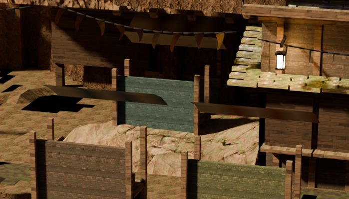
stall() puts the
backboard sb at cy − sgn·(hy − 0.20), 0.10 m thick, while the
four posts stand at ±(hy − 0.12), 0.11 m thick. Worked through: the board
spans hy−0.25 .. hy−0.15 and the posts span hy−0.175 ..
hy−0.065 — they overlap by only 0.025 m and the board stands 0.085 m proud of them
on the plaza side. So the 1.30 m panel shows the plaza an unbroken painted face with its own
frame buried behind it, and by eye (crop above) nothing in the frame reads as holding it up.
A board whose frame is behind it reads as a panel dropped on the deck — which is exactly
what the judge wrote. The fix is one line of geometry (seat the board ON the posts, or give it a
visible ledger); specified, not built, because it needs its own carrier and rebake.git HEAD, not re-measured off a downscaled gallery jpg, and
plate_probe takes a PLATE_BUNDLE override so one instrument reads
both bundles.shot | L<=8 % | L<=4 % | frame L p05 boatyard | 7.04 -> 6.64 | 4.84 -> 4.42 | 4.3 -> 5.1 lockfive | 26.04 -> 22.06 | 13.01 -> 10.05 | 1.6 -> 1.8 north-landing | 8.32 -> 6.55 | 5.89 -> 4.55 | 3.1 -> 4.9 crossing | 17.33 -> 14.92 | 8.35 -> 6.39 | 2.5 -> 3.1 weave | 22.67 -> 21.73 | 10.78 -> 10.01 | 1.8 -> 2.1 cottage | 16.37 -> 15.87 | 9.56 -> 9.24 | 1.4 -> 1.4 waterfront | 5.52 -> 5.38 | 2.52 -> 2.44 | 7.3 -> 7.5 lockhead | 11.48 -> 11.44 | 5.49 -> 5.46 | 3.7 -> 3.7 fishdock | 22.34 -> 22.21 | 12.17 -> 12.01 | 1.6 -> 1.6 gate | 6.60 -> 6.25 | 1.39 -> 1.03 | 6.9 -> 7.3
git status after the rebakes: depth.png is
BYTE-IDENTICAL on every plate that had been baked against the current geometry
(8 of the 10 — only their bg.png moved). Depth is
geometry; if a single vertex had moved, those files would differ. That is a stronger
statement than reading dh_albedo_floor and observing that it writes nothing but
colour-attribute values and one Base Color socket, and it is why walk_engine_gate
and findability are not implicated by this round: no walk cell, no body box and no
camera solve can have moved.ds_shelf's bathymetry and qm_awning_fix's ridge.
They are current with the master for the first time since round 1.scene_redteam --town dellhollow --mode both --shots boatyard,
judge pinned gemini-3.6-flash, N=3 naive looks + checklist, 6 calls, 0 errors —
docs/qa/redteam/run-20260807-183447/. The judge gets no history and no ownership
framing, so the comparison is against run-20260806-1's replies on the same camera.pitch-black, black void, untextured,
unlit and even void occur zero times. The six surviving findings
are about entirely different objects — bunting that terminates mid-air, scaffold beams without
vertical supports, no visible stairs onto the circular deck, the boat hull clipping its
scaffolding, foliage embedded in rock without stems. [QUALITY] frame-edge-world CONVINCING ·
water-read CONVINCING ("realistic teal coloring, subtle surface ripples, transparency in the
shallows, and clean contact boundaries").cine_test 635/1 — the 1 is the PRE-ATTRIBUTED
deep-stairs↔waterfront seam red (MORNING.md 20:20; same
{"fired":0,"expected":10} signature it had before this round and after rounds 1
and 3.2/3.3) · slice_test 776/0 · findability_test 69/0 (12 warnings,
unchanged). walk_engine_gate and the walk cycle are not implicated and the
artifact says so: 0 POSITION and 0 index accessors differ in the re-exported GLB.fx_haze_east
(mat_haze_east) is the single most-hit object in the crushed sample on lockfive
(42 of 220) and weave (54 of 220), with fx_haze_south on quay-west.
Neither material carries a Principled BSDF at all — the albedo resolver walks the tree
and comes back with nothing — so the "far cliff wall ends abruptly against a flat gray plane"
(gate, frame-edge WEAK) and lockfive's "flat, featureless dark void" are very likely the same
object seen from three cameras. Not measured further and not touched: it needs its own census
of what those cards actually shade to, and it is a frame-edge item, not a floor one.Left: before4/ (the round-3 item-2/3 bake). Right: live.
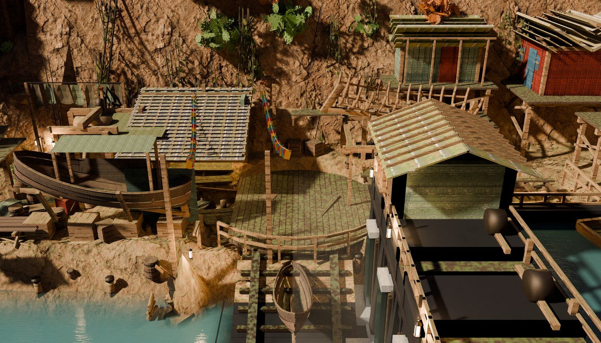
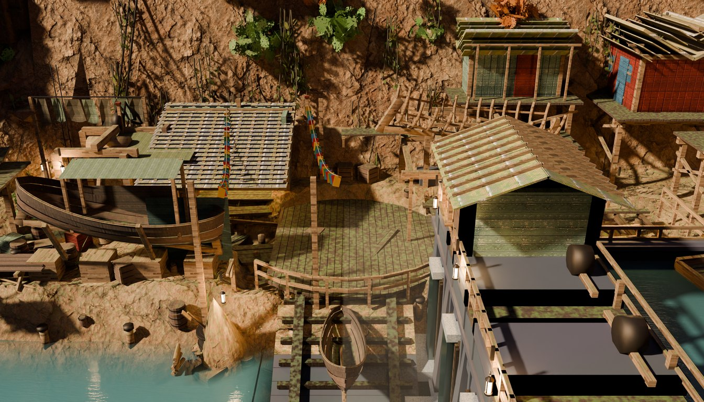
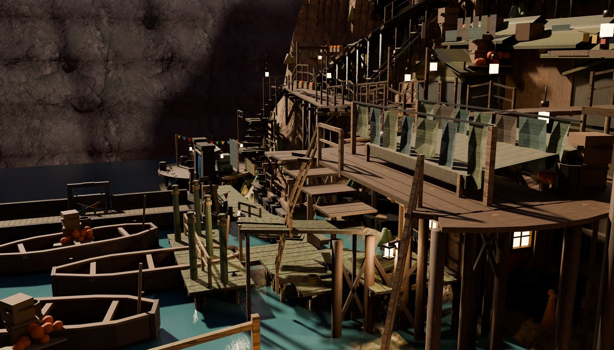
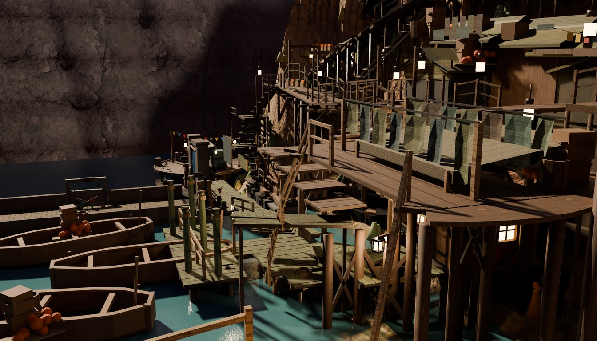
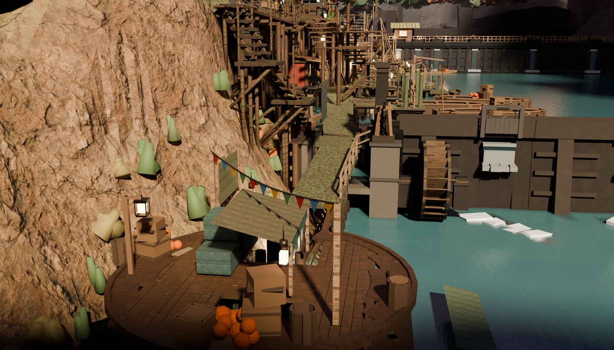
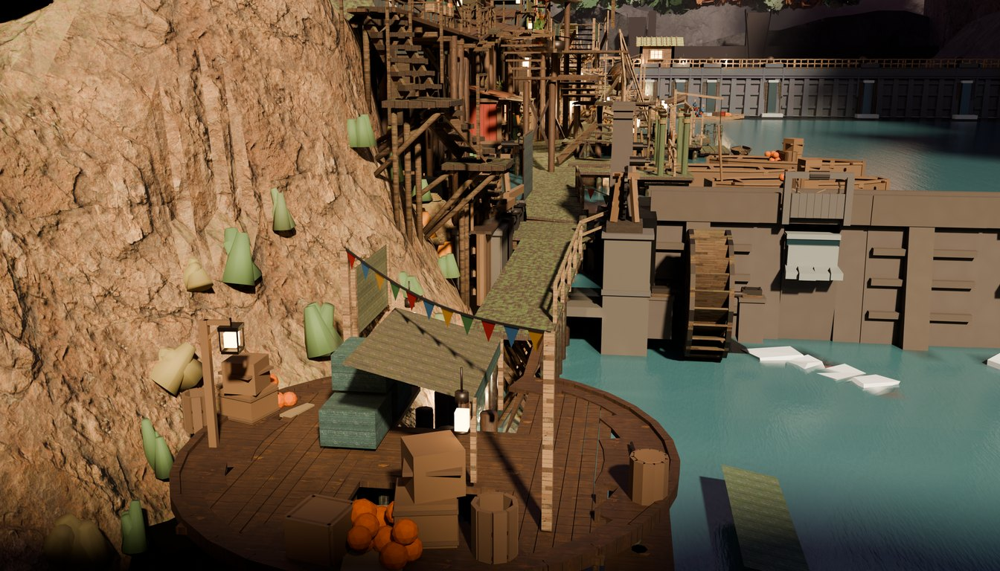
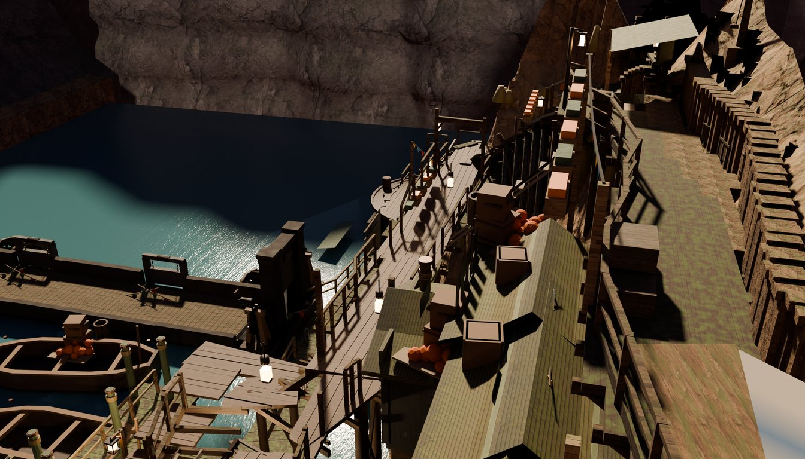
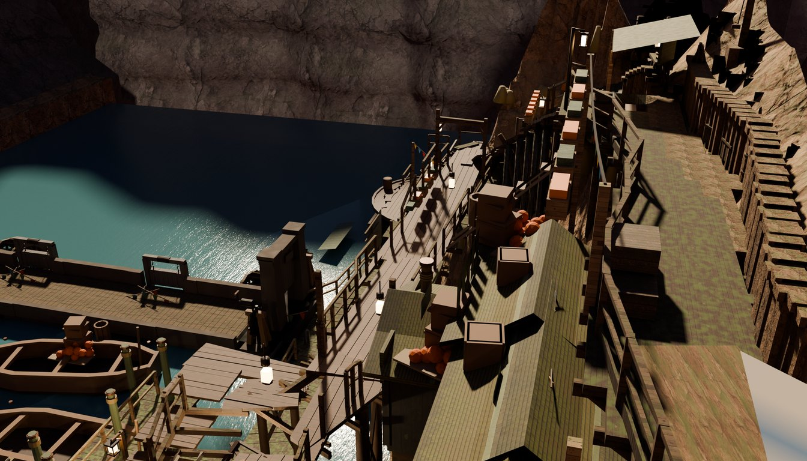
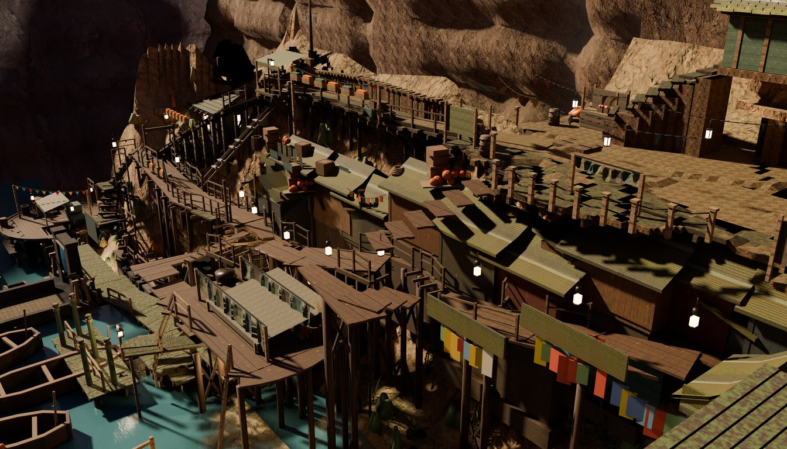
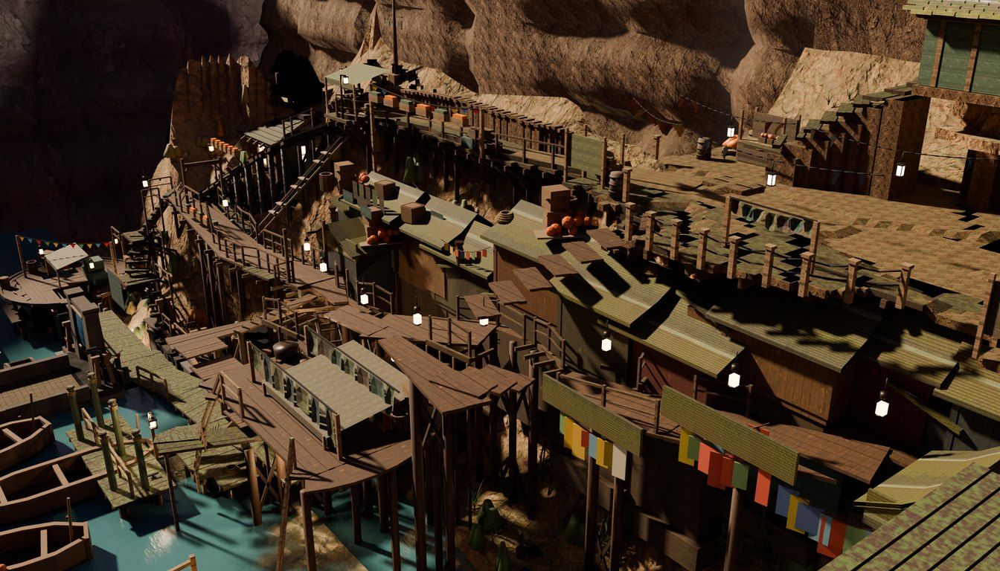
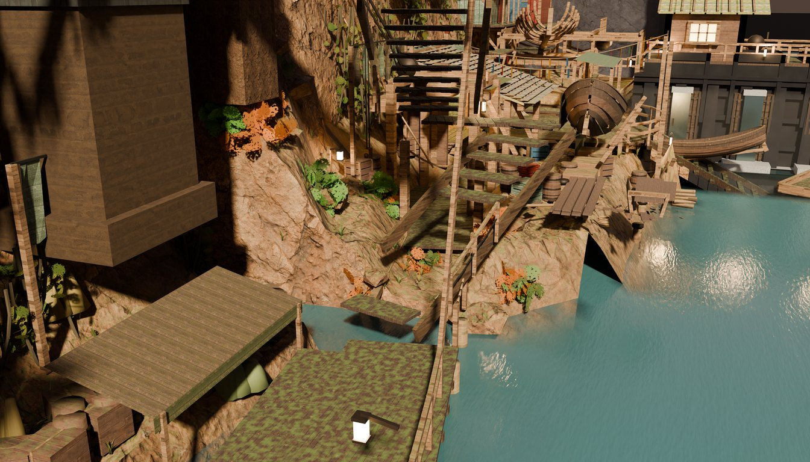
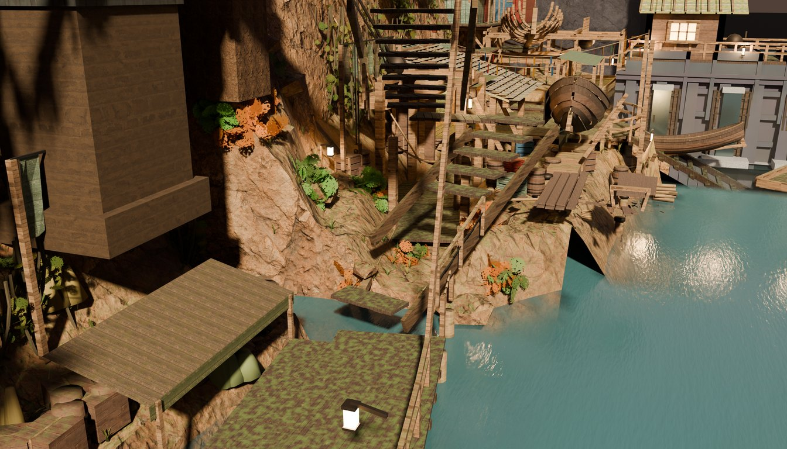
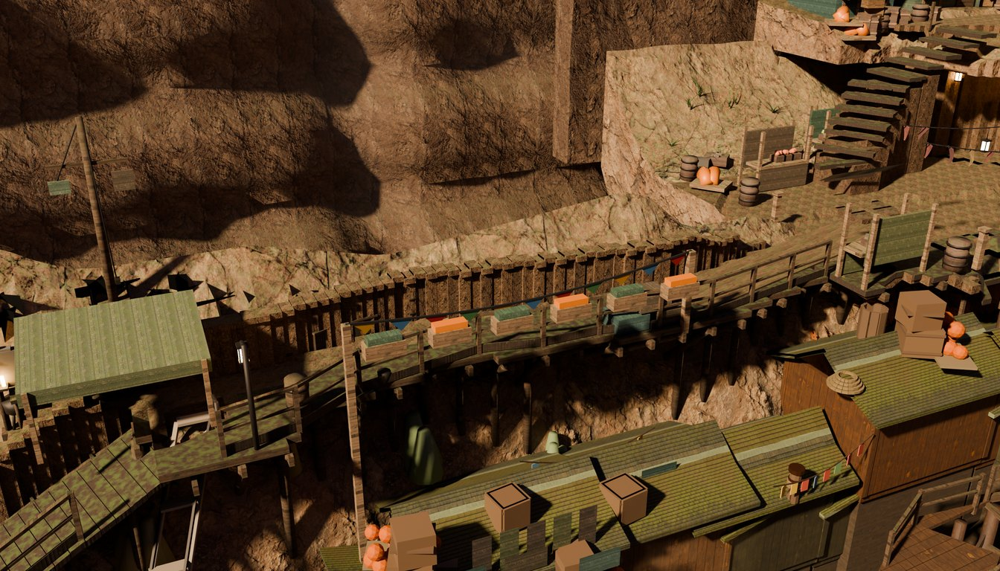
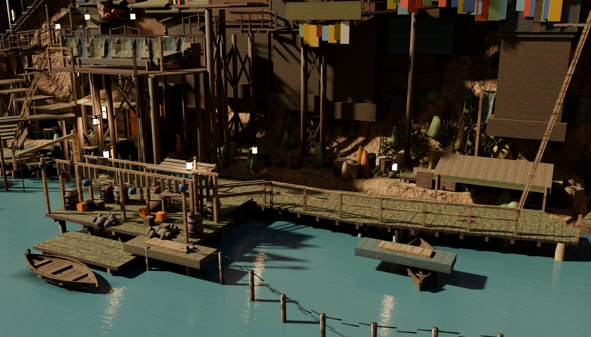
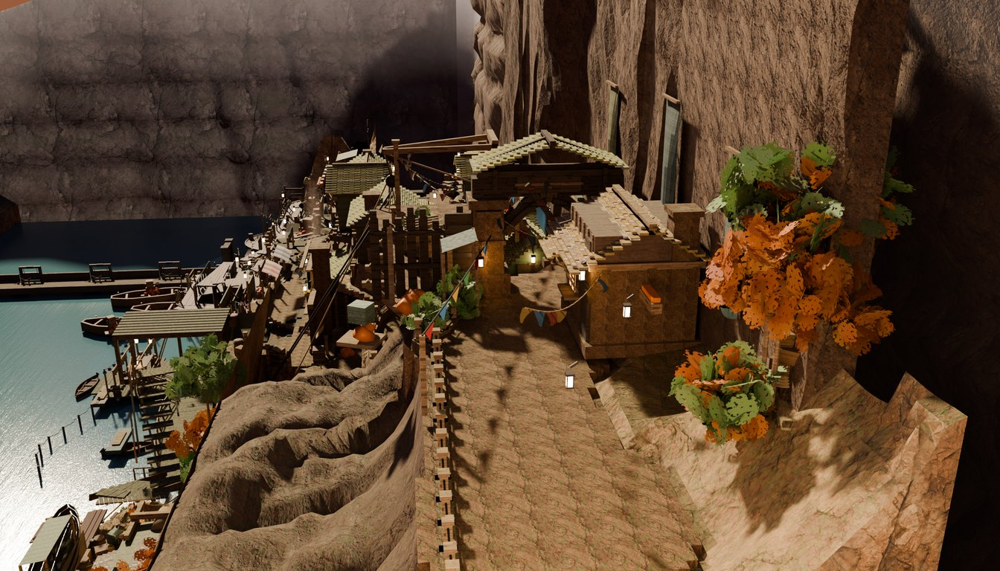